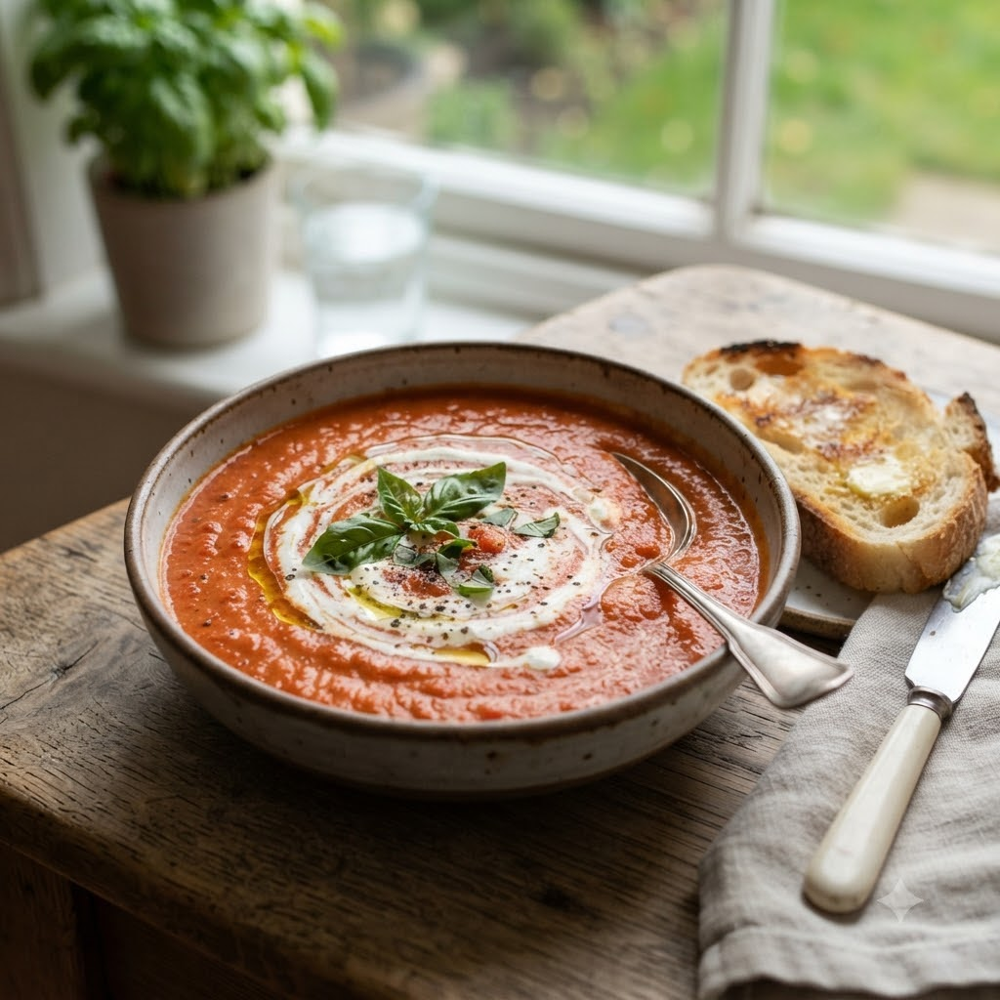

Tomato Soup

Tomato Soup
Chef Magic – Boil + Whisk Auto 16 min — Serves 4
Ingredients
- 4 large tomatoes, chopped
- 1 small onion, chopped
- 2 cloves garlic (lehsun)
- 1 cup water or vegetable stock
- 1 tsp sugar
- Salt & pepper to taste
- 1 tbsp butter (optional)
Method
1Add tomatoes, onion, garlic, water, sugar, salt and pepper to the jar.
2Select Boil (Speed 1–2, 100°C) and cook until tomatoes are fully soft.
3Select Whisk/Blend (Speed 8–10) to purée until smooth.
4Stir in butter if using and serve hot.